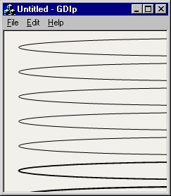
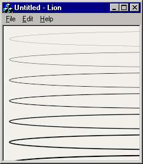

| |
To compare the rendering capabilities and quality I installed
GDI+
and created a simple application. The application draws narrow ellipses of different
thickness, which is a good test for the quality of Anti-Aliasing. I suspected that the quality of
MS GDI+ is not the best, but I hoped they did something better than MS DirectAnimation,
whose quality is very questionable. But things did not change and actually, the quality
of the GDI+ renderer is as lousy as earlier Microsoft's attempts. It uses only 4 levels
of Anti-Aliasing and calculates the values pretty bad. But the worst thing is that GDI+ cannot
correctly render lines whose thickness is less than one pixel. It means that actually there's
no subpixel accuracy as they claim. Of cource, it's phisically impossible to draw a line of, say,
0.5 pixel width, but a proper renderer will simulate it with decreasing the brightness of the
line. Look.


Here the left screenshot is rendered with GDI+, the right one - with AGG.
Click on the images to see the larger ones. Below the images there're
zommed in parts that show the quality in detalis. The ellipses have thickness
increasing by 0.3 of a pixel from top to bottom. As you can see, the visual
thickness of the first 5 ellipses rendered with GDI+ is the same, and only
after achieving the threshold of 1.8 pixels it sharply increases. In AGG the thickness
of the ellipses increases quite gradually.
Below is the code used to render the ellipses with GDI+ and AGG.
//Rendering with GDI+
//----------------------------
Matrix matrix;
matrix.Translate(-REAL(width/2), -REAL(height/2), MatrixOrderAppend);
matrix.Rotate(REAL(g_angle), MatrixOrderAppend);
matrix.Scale(REAL(g_scale), REAL(g_scale), MatrixOrderAppend);
matrix.Translate(REAL(width/2), REAL(height/2), MatrixOrderAppend);
graphics.SetTransform(&matrix);
int i;
float y = 10.0f;
float thickness = 0.3f;
SolidBrush sBrush(Color(255, 0, 0, 0));
for(i = 0; i < 15; i++)
{
Pen black(&sBrush, thickness);
graphics.DrawEllipse(&black, 20.0f, y, 560.0f, 25.0f);
thickness += 0.3f;
y += 35.0f;
}
//Rendering with AGG
//----------------------------
affine_matrix mtx;
mtx *= translation_matrix(-width/2, -height/2);
mtx *= scaling_matrix(g_scale, g_scale);
mtx *= rotation_matrix(-g_angle);
mtx *= translation_matrix(width/2, height/2);
ellipse ell;
conv_polyline < ellipse > poly(&ell);
conv_transform< conv_polyline< ellipse > > trans(&poly, &mtx);
r.set_attribute(rgba8(0, 0, 0, 255));
int i;
double y = 10.0;
double thickness = 0.3;
for(i = 0; i < 15; i++)
{
ellipse.init(580.0/2.0, y+12, 560.0/2.0, 12.5, 100);
poly.set_thickness(thickness);
make_polygon(&g_polyfill, &trans, 0);
render_polygon(&r, &g_polyfill);
thickness += 0.3f;
y += 35.0f;
}
The code of using AGG is a bit more complex than GDI+ one, but the beautiful idea of
creating custom conversion pipelines in AGG gives you unlimited possibilities.
Working applications for Windows are available for download:
GDI+ Rendering,
AGG Rendering
Both applications use affine transformations. Just click the left mouse button and
drag to rorate and scale the ellipses. Watch for changing of the line thickness.
|
| |
{kind=link}
{kind=link}